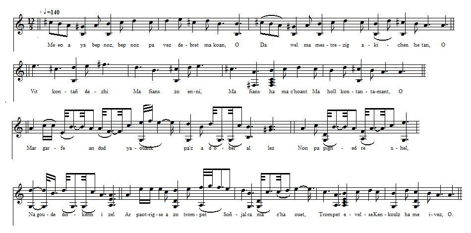

KLOAREK
Clerc
Clerk
Chant collecté par Théodore Hersart de La Villemarqué
dans le 1er Carnet de Keransquer (pp. 134-135).
MélodieArrangt: Christian Souchon (c) 2015

|
Pas de mélodie connue. Remplacée par une gavotte du "Bro kost er hoed" (8 temps) dont la ligne musicale reproduit les variations des strophes 4 et 5. Des bribes de ce chant sont également notées p.182.2 du carnet: "Me 'm-eus ur bouked er jardin...Ur bouchik a c'houlennan/evit ar gwechik diwezhañ". "J'ai un bouquet au jardin...Un baiser je demande pour la dernière fois". |
No tune known. Replaced here with a 8/12 gavotte from the "Bro kost er hoed" area whose melodic pattern accommodates the changes in stanzas 4 and 5. Snatches of this song are recordes on p.182.2 of the copybook as well: "Me 'm-eus ur bouked er jardin...Ur bouchik a c'houlennan/evit ar gwechik diwezhañ". "I have a bunch of flowers in my yard...A kiss I want for the last time". |
|
BREZHONEK p. 134 1. - Me eo a ya bep noz, bep noz pa vez debret ma koan, O Da wel ma mestrezig a-kichen he tan, O (diw w.) Vit kontañ dezhi Ma fians zo enni, Ma fians ha ma c'hoant Ma holl kontantamant, O. (diw w.) 2. Me am-eus ur bouked kaer zo graet a louzoù fin, O. Emaon bet oc'h ober e-barzh peder jardin, O (diw w.) Lakaet anezhi Lore Spaign ha sklaerig Delienn ha spernenn Rozennig mar fell din, O. - (diw w.) 3. Mar garfe an dud yaouank pa'z a d' ober al lez Da choas pep vestrez hag a jojefe oute, Non pa pigned re uhel, Na goude diskenn izel Rag red eo intent rezon D'oc'h pep a kondision. p. 135 4. - Ar paotrig-se a zo trompet Soñjal ra ma c'haouet, Trompet evelse Kenkoulz ha me ivez, O. - (diw w.) 5. - Klevit-ta, ma mammig kozh, allit-c'hwi dar ger, O Grit ma gourc'hemennoù ha larit d'am servicher, O: (diw w.) "Pas dont mui d'am zi Pas dont mui d'am zi Kar ma c'halon zo Torret, briset ha goullo. - (diw w.) 6. - Bonjour deoc'h-c'hwi, den yaouank, eurvat deoc'h a laran, O. Ha gourc'hemenoù ho-peus demeus ho mestrez, O. (diw w.) E-deus laret din Mont henozh d'ho ti. Ha keun ho-peus a galon pe boan spered? He-deus laret din Mont henozh d'ho ti Biken joa n'ho po, mar d'eo ho kalon zo torret. - KLT gand Christian Souchon. |
TRADUCTION FRANCAISE p. 134 1. - Tous les soirs que le bon Dieu fait quand j'ai fini ma soupe Pour voir ma belle près de l'âtre je me mets en route: (bis) Je lui dis que moi En elle j'ai foi, Qu'elle est à la fois Joie et objet de doute. (bis) 2. J'apporte ce bouquet joli de fleurs et d'herbes fines. Dans pas moins de quatre jardins cueillies, on le devine. (bis) J'y ai mis, voyez, Eclair et laurier. De notre rosier Des feuilles, des épines. - (bis) 3. Il faut que les jeunes gens, dès lors qu'ils courtisent, Choisissent dans leur état leurs propres promises. Trop haut viser n'est pas bien. Trop bas ne vaut guère; Suis la voie de la raison! A chacun son aire! p. 135 4. - Ce garçon-là se trompe bien S'il pense qu'il me tient; Il se trompe et me Trompe aussi de la sorte. - (bis) 5. - Allez, allez chez ce jeune homme, je vous prie, grand' mère Faites mes compliments, sinon il ne m'écoute guère: (bis) Qu'il reste chez lui, L'amoureux transi! Mon cur est meurtri, Brisé, mais il est vide! - (bis) 6. - Bonjour, jeune homme, de vous ren- contrer je suis bien aise Et de vous faire les compliments de votre maîtresse. (bis) A ce qu'elle dit, Il faut qu'aujourd'hui, Demain et toujours, vous cessiez vos visites. Restez au logis! Si c'est votre esprit Qui souffre, votre cur se remettra vite!" Traduction: Christian Souchon (c) 2015 |
ENGLISH TRANSLATION p. 134 1. - Tonight, as I do every night, when I have finished dinner, I'll go to Sweetheart's; by the hearth, we'll spend some time together. (twice) Emphasize I must That I put my trust In her, that I lust After her, altogether. (twice) 2. I have composed a pretty posy of fine herbs and of flowers. No less than four yards, if not more, I searched for them for hours (twice) My posy adorn Laurel, yellow corn, Tiny leaves and thorns Of a rose that was ours. - (twice) 3. O if only young lads would, paying court to lasses, Set their hearts on those their own station encompasses, Would they not climb too high, no, Would they not stoop too low! Is good sense too demanding? Stay by your own standing! p. 135 4. - This lad is deluding himself, Thinks he won me over: I am deceived in the process As is my mock lover. -(twice) 5. - Grandmother dear, listen, would you Go and pay him a visit, Would you give him my compliments And make it quite explicit: (twice) "You keep furthermore Away from my door! You break, uncalled for, My heart. It cannot bear it." (twice) 6. - Good day to you, young gentleman, Aye, I say good day to you, I forward to you compliments from the young lass you love, too. (twice) She tells you "Be gone And leave me alone!" Is it in your heart or your mind that you feel pain? She tells you "Be gone And leave me alone!" Broken heart will heal. Pain in your mind is but vain." Translation: Christian Souchon (c) 2015 |
NOTES:
|
Bibliographie: La Villemarqué semble être le seul à avoir noté ce "chant de clerc" sur les mésalliances. Les passages en italiques dans le texte breton sont illisibles ou peu compréhensibles. |
Bibliography: Apparently only La Villemarqué recorded this "clerk poem" on misalliance. The words in italics in the Breton text are illegible or may not be easily construed. |